manimR can typeset text in three ways, and the higher level mobjects for code, numbers, matrices and tables build on them:
| Mobjects | Typeset with | Needs |
|---|---|---|
Text(), MarkupText(),
Paragraph(), Code(), Table()
|
system fonts | nothing extra |
Tex(), MathTex(),
BulletedList(), Title(),
DecimalNumber(), Integer(),
Variable(), Matrix() and friends,
MathTable(), IntegerTable(),
DecimalTable()
|
LaTeX |
latex and dvisvgm
|
Typst(), MathTypst()
|
Typst | the typst compiler |
Every typeset result is a vectorized mobject, so it can be moved,
colored and animated like any shape. The examples draw single frames
with plot() and animate with scenes; chunks that need LaTeX
or Typst only run when the tools are installed. LaTeX output and Typst
output are cached in media_dir (see
?manim_config), so a formula is compiled only once.
Text
Fonts, sizes and styles
Text() draws a string with a system font. The main
arguments are font_size (48 by default),
color, font (a family name;
"sans", "serif" and "mono" work
everywhere), weight and slant.
lines <- VGroup(
Text("The default font at size 48"),
Text("serif at size 36", font = "serif", font_size = 36),
Text("mono and bold", font = "mono", weight = BOLD),
Text("sans, italic and yellow", font = "sans", slant = ITALIC, color = YELLOW)
)
plot(lines$arrange(DOWN, buff = 0.4))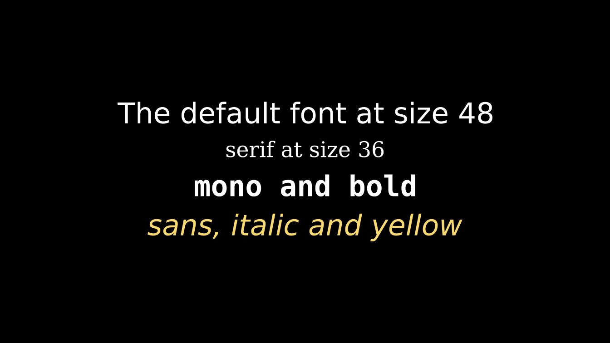
Weights and slants are strings, available as constants with the same
names as in upstream manim: NORMAL, ITALIC and
OBLIQUE for slant, and THIN,
ULTRALIGHT, LIGHT, SEMILIGHT,
BOOK, NORMAL, MEDIUM,
SEMIBOLD, BOLD, ULTRABOLD,
HEAVY and ULTRAHEAVY for weight
(see ?font_constants). A font that lacks a weight uses the
closest one it has.
c(NORMAL, ITALIC, OBLIQUE)
#> [1] "NORMAL" "ITALIC" "OBLIQUE"
weights <- c(THIN, ULTRALIGHT, LIGHT, SEMILIGHT, BOOK, NORMAL, MEDIUM, SEMIBOLD, BOLD, ULTRABOLD, HEAVY, ULTRAHEAVY)
samples <- VGroup(lapply(weights, function(w) Text(w, weight = w, font_size = 40)))
plot(samples$arrange_in_grid(rows = 4, cols = 3, buff = c(0.8, 0.4)))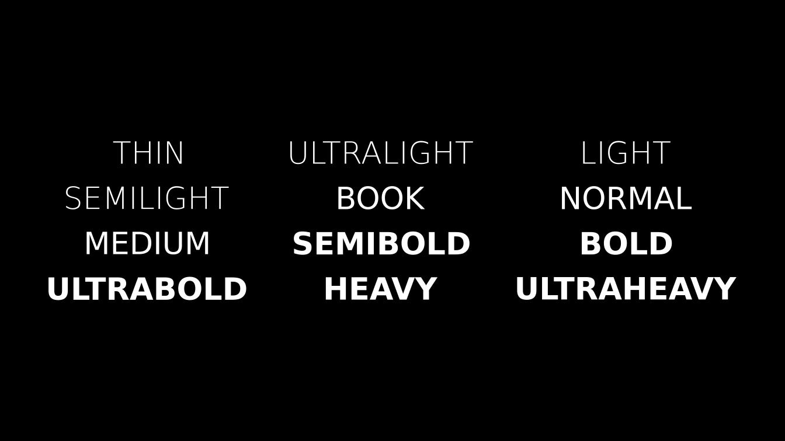
TextClass$font_list() lists the font families installed
on your system:
head(TextClass$font_list())
#> [1] "Bitstream Charter" "C059" "Courier"
#> [4] "D050000L" "DejaVu Math TeX Gyre" "DejaVu Sans"A font file that is not installed can be used after
register_font(), which makes the file available under its
family name and returns that name. It looks for the file as given, then
in assets/fonts/ and fonts/ below the working
directory.
family <- register_font("fonts/MyFont-Regular.ttf")
Text("Hello", font = family)Any font file works, including one that is already installed, as in this runnable example (the family name depends on your system):
font_file <- systemfonts::match_fonts("serif")$path
family <- register_font(font_file)
plot(Text(paste("Registered font:", family), font = family))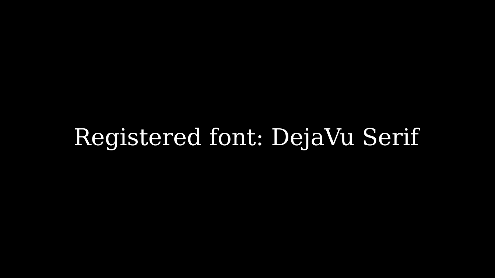
Upstream manim’s register_font() is a context manager
that forgets the font when its with block ends; in manimR
the font stays registered for the rest of the R session.
Glyphs are submobjects
Each visible character is a submobject (spaces have none), so
text[i] is the i-th glyph and text[a:b] a
group of glyphs. get_part_by_text() returns the glyphs of
the first occurrence of a substring. The font_size field
reads or changes the size of an existing text.
greeting <- Text("Hello world")
length(greeting$submobjects)
#> [1] 10
greeting[1]$set_color(RED)
greeting$get_part_by_text("world")$set_color(YELLOW)
greeting$font_size <- 96
greeting$font_size
#> [1] 96
plot(greeting)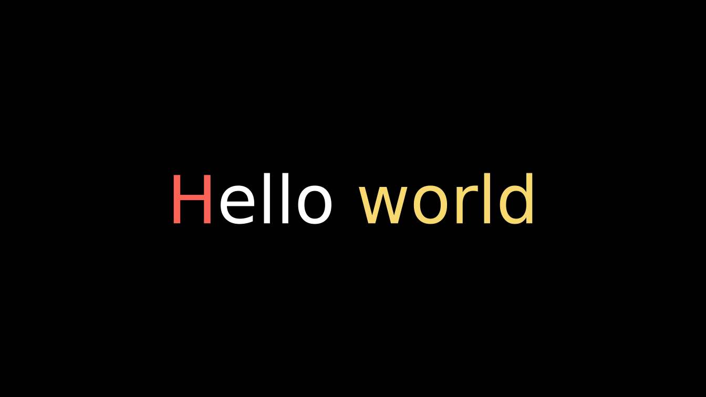
Coloring and styling parts
Five arguments style parts of a text. Each takes a named list whose
names are substrings (every occurrence is styled) or slices such as
"[2:5]":
-
t2c: colors. -
t2f: fonts. -
t2s: slants. -
t2w: weights. -
t2g: gradients, given as vectors of colors.
Slices follow upstream manim and Python: they count from 0 and
exclude the end, so "[2:5]" is the third to fifth
characters. This differs from R indexing such as text[1],
which counts from 1. gradient colors the whole text with a
gradient.
parts <- VGroup(
Text("Hello world, hello R", t2c = list(world = YELLOW, R = BLUE), t2w = list(Hello = BOLD),
t2s = list(world = ITALIC), t2f = list(R = "mono")),
Text("0123456789", t2c = list("[2:5]" = RED)),
Text("a gradient on one word", t2g = list(gradient = c(TEAL, PURPLE))),
Text("Rainbow text", gradient = c(RED, YELLOW, GREEN, BLUE))
)
plot(parts$arrange(DOWN, buff = 0.4))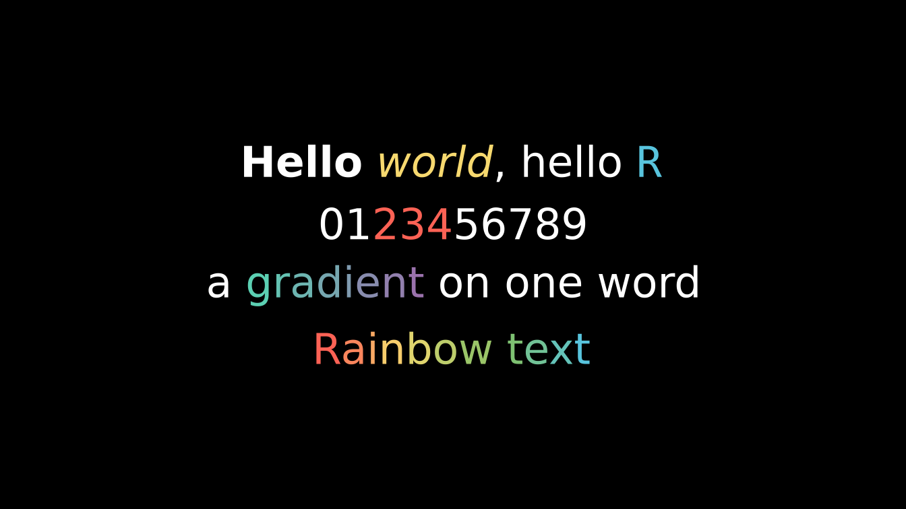
Lines, spacing and ligatures
A newline starts a new line. line_spacing sets the space
between lines as a fraction of the font size (0.3 by default, as
upstream), and tab_width the number of spaces per tab.
plot(VGroup(
Text("line_spacing\nat its default"),
Text("line_spacing\n= 1", line_spacing = 1, color = YELLOW)
)$arrange(RIGHT, buff = 1.5))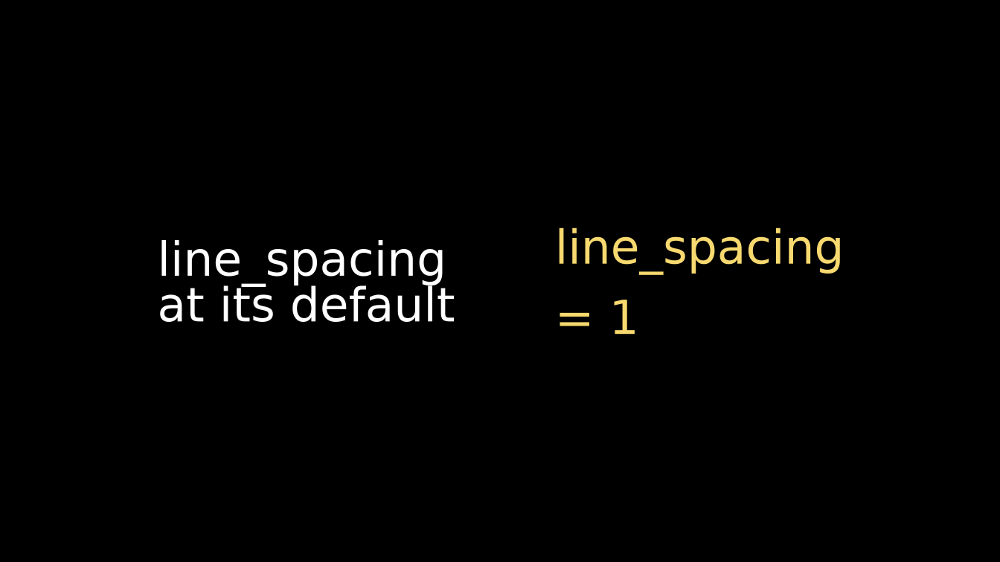
By default Text() turns off ligatures (single glyphs
that some fonts use for letter pairs such as “fi”), so that every
character is its own submobject. disable_ligatures = FALSE
keeps them, which can change the number of glyphs:
MarkupText()
MarkupText() reads Pango style markup, which styles
parts of a text inline. The supported tags are <b>,
<i>, <u>, <s>
(strike), <tt> (monospace), <big>,
<small>, <sup>,
<sub>, manim’s <color col="...">
and <gradient from="..." to="...">, and
<span> with the attributes foreground
(or color, fgcolor), font (or
font_family), weight, style,
size, fgalpha, underline and
strikethrough. Escape <, >
and & as <, >
and &.
markup <- VGroup(
MarkupText("<b>bold</b>, <i>italic</i>, <u>underlined</u> and <s>struck</s>"),
MarkupText("H<sub>2</sub>O and x<sup>2</sup> in <tt>monospace</tt>"),
MarkupText("<span foreground='#58C4DD'>blue</span>, <span fgalpha='50%'>faded</span>, <big>big</big> and <small>small</small>"),
MarkupText("<gradient from='YELLOW' to='RED'>a gradient</gradient> and <span weight='bold' style='italic'>both</span>")
)
plot(markup$arrange(DOWN, buff = 0.35)$scale_to_fit_width(12))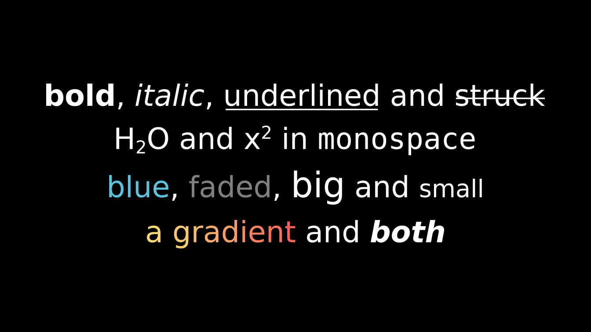
Paragraph()
Paragraph() takes one string per line and returns a
VGroup with one group of glyphs per line, aligned with
alignment = "left", "center" or
"right". Other arguments go to Text().
para <- Paragraph("A paragraph keeps", "each line as its own group,", "aligned to one side.",
alignment = "left", font_size = 40, line_spacing = 0.6)
para[2]$set_color(YELLOW)
plot(para)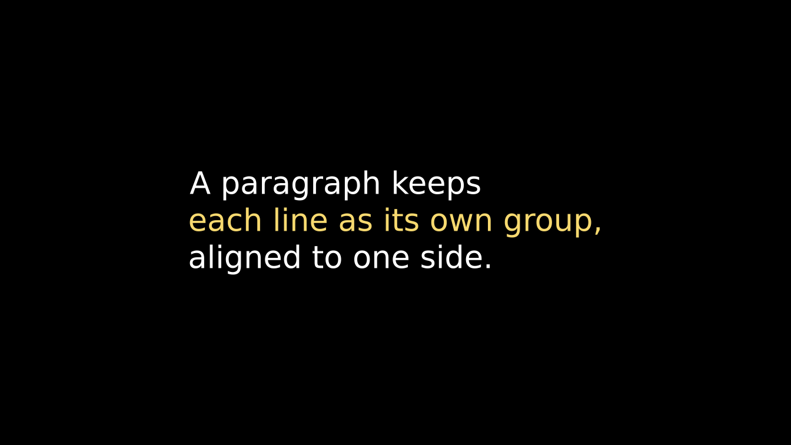
Animating text
Text works with every animation. Write() draws the
glyphs one after another; the Animations
vignette also covers AddTextLetterByLetter(),
AddTextWordByWord() and TypeWithCursor().
TextAnimation <- R6::R6Class("TextAnimation", inherit = Scene,
public = list(construct = function() {
title <- Text("Text in motion", font_size = 72)
self$play(Write(title))
self$play(title$get_part_by_text("motion")$animate$set_color(YELLOW))
self$play(title$animate$scale(0.6)$to_edge(UP))
body <- Paragraph("Each glyph is a submobject,", "so parts can move on their own.",
alignment = "center", font_size = 36)
self$play(FadeIn(body, shift = UP, lag_ratio = 0.02))
self$wait(0.5)
})
)LaTeX: Tex() and MathTex()
Tex() typesets LaTeX in text mode and
MathTex() in math mode (inside an align*
environment). Both need a LaTeX installation with dvisvgm.
In R strings a backslash is written twice, "\\frac{1}{2}";
raw strings such as r"(\frac{1}{2})" avoid the
doubling.
plot(VGroup(
Tex("Hello \\LaTeX, with \\textbf{bold} and \\emph{emphasis}"),
MathTex(r"(e^{i\pi} + 1 = 0)"),
MathTex(r"(\int_0^1 x^2 \, dx = \frac{1}{3})", color = YELLOW, font_size = 60)
)$arrange(DOWN, buff = 0.5))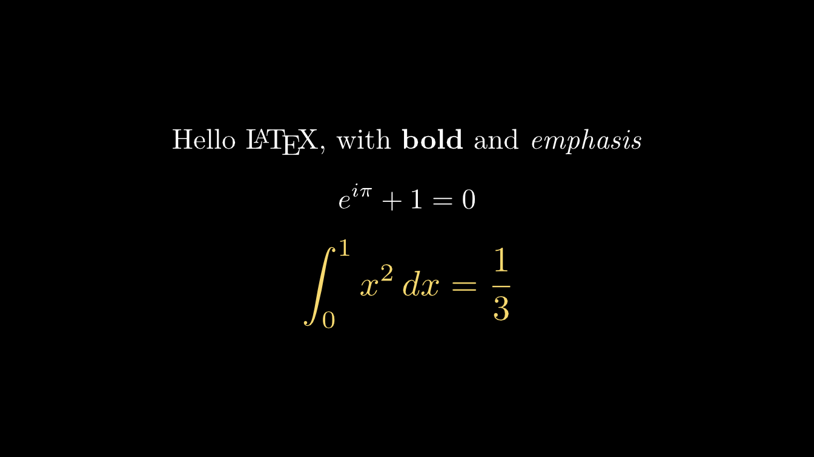
Parts of a formula
Every string passed to MathTex() (or Tex())
becomes one submobject, so eq[3] below is the
b^2 part. Double braces split a single string in the same
way: MathTex("{{a^2}} + {{b^2}}") has the parts
a^2, + and b^2. Methods that look
parts up by their LaTeX string are:
-
set_color_by_tex(tex, color)andset_opacity_by_tex(tex, opacity). -
get_part_by_tex(tex), the first part with that string, andget_parts_by_tex(tex), a group of all of them. -
index_of_part_by_tex(tex), its position among the submobjects.
eq <- MathTex("a^2", "+", "b^2", "=", "c^2")
eq$font_size <- 96
length(eq$submobjects)
#> [1] 5
eq[3]$set_color(BLUE)
eq$set_color_by_tex("c^2", YELLOW)
eq$get_part_by_tex("+")$set_color(RED)
eq$index_of_part_by_tex("=")
#> [1] 4
plot(eq)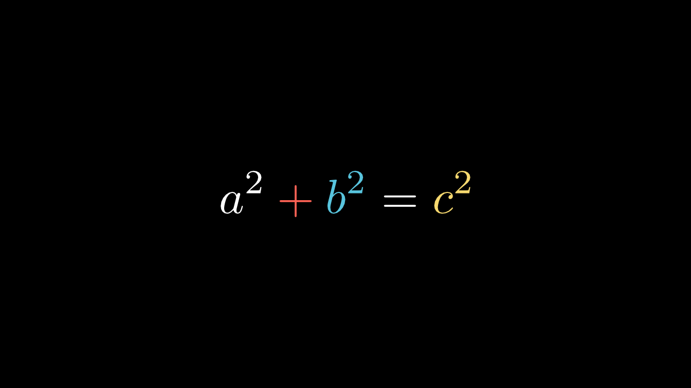
substrings_to_isolate splits out every occurrence of the
given substrings, so they can be colored even inside a single string,
and tex_to_color_map isolates and colors substrings in one
step. arg_separator is the text inserted between the
strings (a space for MathTex(), nothing for
Tex()), and tex_environment the LaTeX
environment ("align*" for MathTex(),
"center" for Tex()).
SingleStringMathTex() typesets one string without any
splitting.
plot(VGroup(
MathTex("(x + 1)^2 = x^2 + 2x + 1", substrings_to_isolate = "x")$set_color_by_tex("x", BLUE),
MathTex(r"(\alpha + \beta = \gamma)", tex_to_color_map = list("\\alpha" = RED, "\\beta" = GREEN)),
SingleStringMathTex(r"(\sum_{n=1}^\infty \frac{1}{n^2} = \frac{\pi^2}{6})")
)$arrange(DOWN, buff = 0.5)$scale(1.3))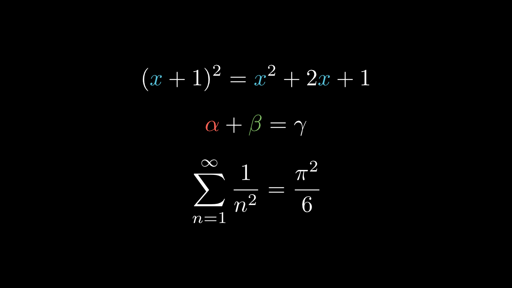
Lists and titles
BulletedList() typesets one bulleted item per string;
fade_all_but(i) dims every item except one.
Title() places a title at the top of the frame with an
underline (include_underline,
match_underline_width_to_text).
title <- Title("Bulleted lists")
items <- BulletedList("Strings become items", "Each item is a part", "Fade the rest to focus")
items$fade_all_but(2)
plot(VGroup(title, items$scale(1.4)))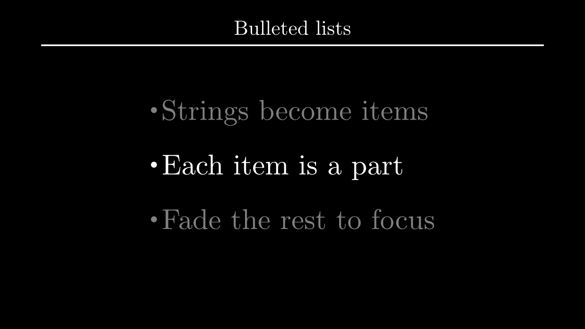
Templates
The LaTeX document around each expression comes from a
TexTemplate(). Add packages with
add_to_preamble() and commands after
\begin{document} with add_to_document();
tex_compiler and output_format choose the
compiler ("latex" with ".dvi",
"xelatex" with ".xdv", or
"lualatex" with ".pdf"). Pass a template as
tex_template to one mobject, or make it the default for
everything with manim_config(tex_template = ...).
TexTemplateClass$from_file() reads a whole template from a
.tex file.
script <- TexTemplate()
script$add_to_preamble("\\usepackage{mathrsfs}")
plot(MathTex(r"(\mathscr{L}\{f\}(s) = \int_0^\infty f(t) e^{-st} \, dt)", tex_template = script, font_size = 80))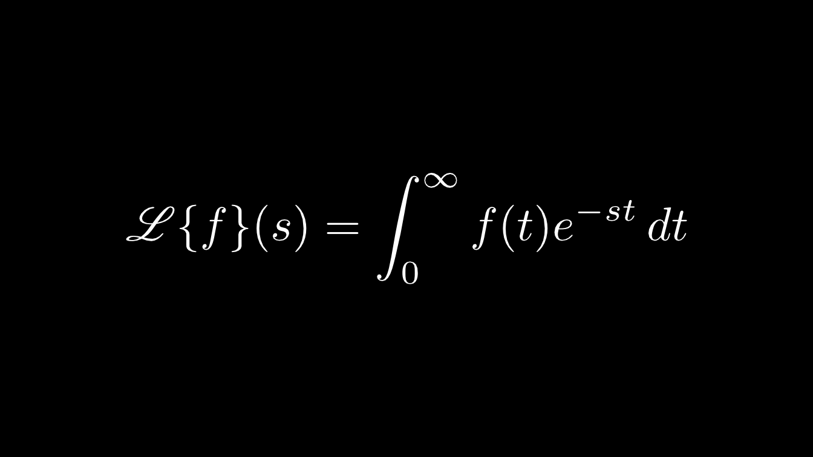
TexTemplateLibrary() returns ready made templates
(default, threeb1b, ctex and
simple), and TexFontTemplates() returns about
fifty templates that switch the font of text and math. Upstream manim
stores these in class attributes, as in
TexTemplateLibrary.ctex; in R they are functions that
return a fresh list each time, written
TexTemplateLibrary()$ctex, so changing one template cannot
affect another.
names(TexTemplateLibrary())
#> [1] "default" "threeb1b" "ctex" "simple"
length(TexFontTemplates())
#> [1] 52
TexFontTemplates()$french_cursive$description
#> [1] "French Cursive (Euler Greek)"Most font templates need extra LaTeX packages (the one below uses
frcursive and mathastext, both part of TeX
Live).
cursive <- TexFontTemplates()$french_cursive
plot(Tex("Handwritten $x^2 + y^2 = 1$", tex_template = cursive, font_size = 72))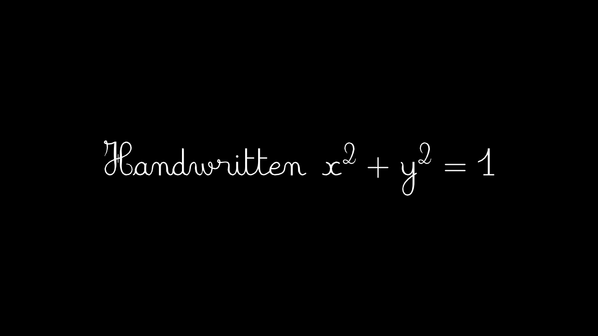
tex_to_svg_file() is the function underneath: it
compiles an expression and returns the path of the SVG file, which
SVGMobject() can load. The file draws in black, so give the
imported shapes a fill_color.
svg <- tex_to_svg_file(r"(\sqrt{2})", environment = "align*")
basename(svg)
#> [1] "24fb166be7fce66f.svg"
plot(SVGMobject(svg, fill_color = WHITE, height = 2))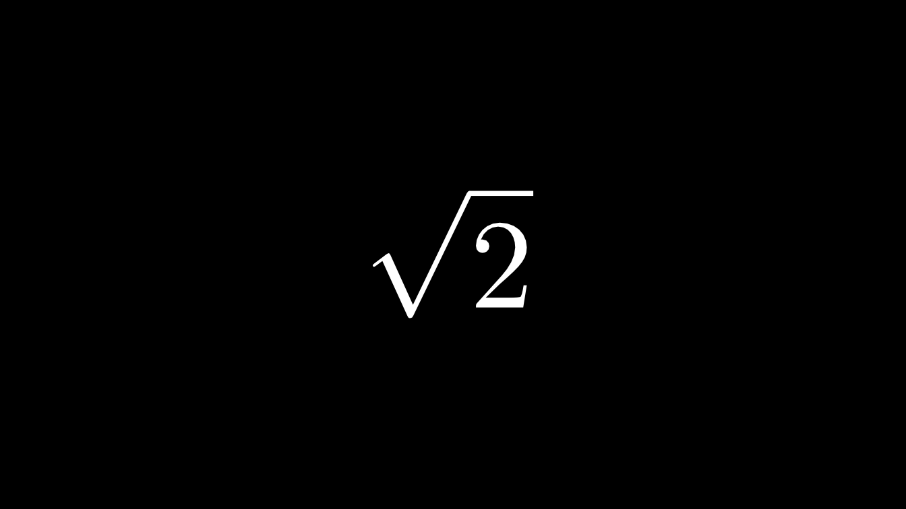
Typst: Typst() and MathTypst()
Typst is a modern typesetting system
with a single small compiler. Typst() takes Typst markup
and MathTypst() a math expression without the
$ signs. Install the typst command line
compiler, or point manimR to it with
manim_config(typst = "/path/to/typst").
plot(VGroup(
Typst("*Hello* from _Typst!_", font_size = 72),
MathTypst("integral_0^1 x^2 dif x = 1/3", color = YELLOW, font_size = 60)
)$arrange(DOWN, buff = 0.6))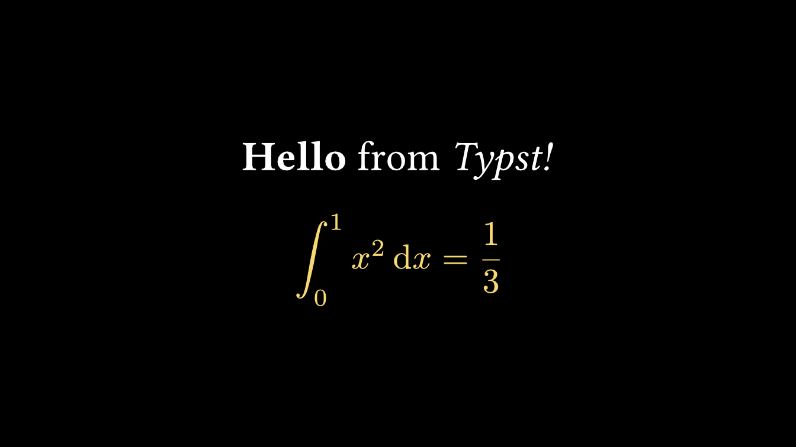
Parts are selected with select(). In
MathTypst(), {{ content : label }} names a
part and {{ content }} numbers it, so
select("lhs") and select(1) below return
groups of glyphs. Unlike upstream manim, numeric keys count from 1. In
general Typst markup, parts are marked with ordinary Typst labels,
#box[body] <label>. typst_preamble adds
Typst code (such as #set rules) before the body.
eq <- MathTypst("{{ a^2 + b^2 : lhs }} = {{ c^2 }}", font_size = 96)
eq$select("lhs")$set_color(BLUE)
eq$select(1)$set_color(YELLOW)
fancy <- Typst("#box[Labeled] <word> text in italics", typst_preamble = "#set text(style: \"italic\")")
fancy$select("word")$set_color(ORANGE)
plot(VGroup(eq, fancy)$arrange(DOWN, buff = 0.6))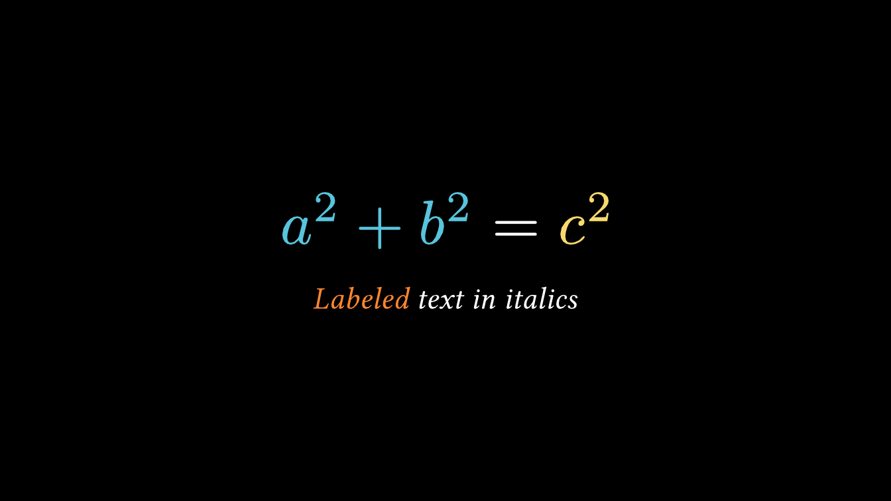
typst_to_svg_file() compiles Typst code to an SVG file
and returns its path, like tex_to_svg_file() does for
LaTeX.
basename(typst_to_svg_file("$sum_(k=1)^n k = n(n+1)/2$"))
#> [1] "d39970d512f28aca.svg"Code listings
Code() shows highlighted source code, from a string
(code_string) or a file (code_file, with the
language guessed from the extension). R and Python are highlighted;
other languages are shown in one color, with a warning. The listing is
made of Text() lines in a monospaced font, so no LaTeX is
needed.
-
formatter_style: one of the built in styles (CodeClass$get_styles_list()), or a named list of colors like the entries ofCodeClass$get_pygments_style("monokai"). -
add_line_numbersandline_numbers_from: line numbers. -
background:"rectangle"or"window"(with three buttons), styled throughbackground_config. -
paragraph_config: arguments for theText()lines, such asfont_size.
CodeClass$get_styles_list()
#> [1] "abap" "algol" "algol_nu"
#> [4] "arduino" "autumn" "bw"
#> [7] "borland" "coffee" "colorful"
#> [10] "default" "dracula" "emacs"
#> [13] "friendly_grayscale" "friendly" "fruity"
#> [16] "github-dark" "gruvbox-dark" "gruvbox-light"
#> [19] "igor" "inkpot" "lightbulb"
#> [22] "lilypond" "lovelace" "manni"
#> [25] "material" "monokai" "murphy"
#> [28] "native" "nord-darker" "nord"
#> [31] "one-dark" "paraiso-dark" "paraiso-light"
#> [34] "pastie" "perldoc" "rainbow_dash"
#> [37] "rrt" "sas" "solarized-dark"
#> [40] "solarized-light" "staroffice" "stata-dark"
#> [43] "stata-light" "tango" "trac"
#> [46] "vim" "vs" "xcode"
#> [49] "zenburn"
source_code <- "square <- function(x) {\n # multiply x by itself\n x * x\n}\nsquare(4)"
listing <- Code(code_string = source_code, language = "r", formatter_style = "monokai",
background = "window", paragraph_config = list(font_size = 28))
plot(listing$scale_to_fit_width(10))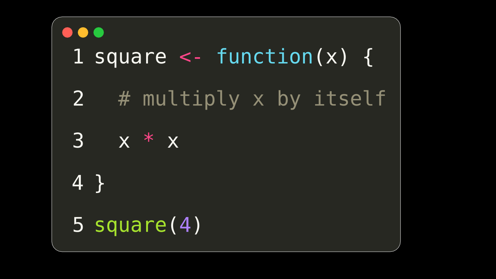
The parts are fields: code_lines (a VGroup
with one Text() per line), line_numbers and
background. That makes it easy to point at a line:
CodeHighlight <- R6::R6Class("CodeHighlight", inherit = Scene,
public = list(construct = function() {
file <- tempfile(fileext = ".py")
writeLines(c("def square(x):", " return x * x", "", "print(square(4))"), file)
listing <- Code(code_file = file, formatter_style = "emacs", line_numbers_from = 10,
paragraph_config = list(font_size = 30))
self$play(FadeIn(listing))
box <- SurroundingRectangle(listing$code_lines[2], color = YELLOW, buff = 0.08)
self$play(Create(box))
self$play(Transform(box, SurroundingRectangle(listing$code_lines[4], color = YELLOW, buff = 0.08)))
self$wait(0.5)
})
)Numbers
DecimalNumber() shows a number that can change later
with set_value(); get_value() reads it and
increment_value() adds to it. Integer() is the
same with no decimal places. The formatting arguments are:
-
num_decimal_places: digits after the decimal point. -
include_sign: always show the sign. -
group_with_commas: thousands separators (on by default). -
unit: LaTeX appended after the number, raised when it starts with^. -
show_ellipsis: append an ellipsis. -
edge_to_fix: the edge that stays in place when the value changes. -
mob_class: the constructor used for each character,MathTexby default.
numbers <- VGroup(
DecimalNumber(1234567.891, num_decimal_places = 3),
DecimalNumber(-3.2, include_sign = TRUE, unit = "^\\circ"),
DecimalNumber(42.5, unit = "\\%"),
DecimalNumber(3.14159, num_decimal_places = 4, show_ellipsis = TRUE),
Integer(-17),
DecimalNumber(1 + 2i)
)
plot(numbers$arrange(DOWN, buff = 0.25)$scale(1.5))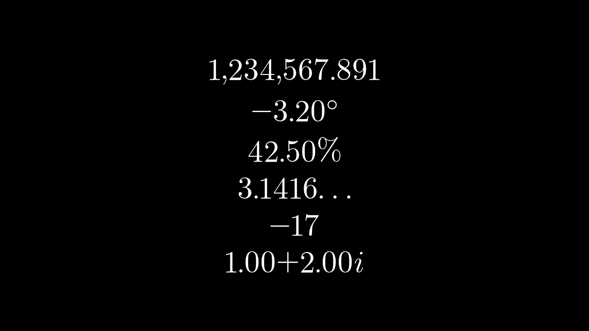
count <- Integer(7)
count$increment_value(3)
count$get_value()
#> [1] 10With mob_class = Text the digits come from system fonts,
so the number works without LaTeX:
price <- DecimalNumber(19.99, mob_class = Text, font_size = 96, color = GREEN)
price$set_value(24.5)
price$get_value()
#> [1] 24.5
plot(price)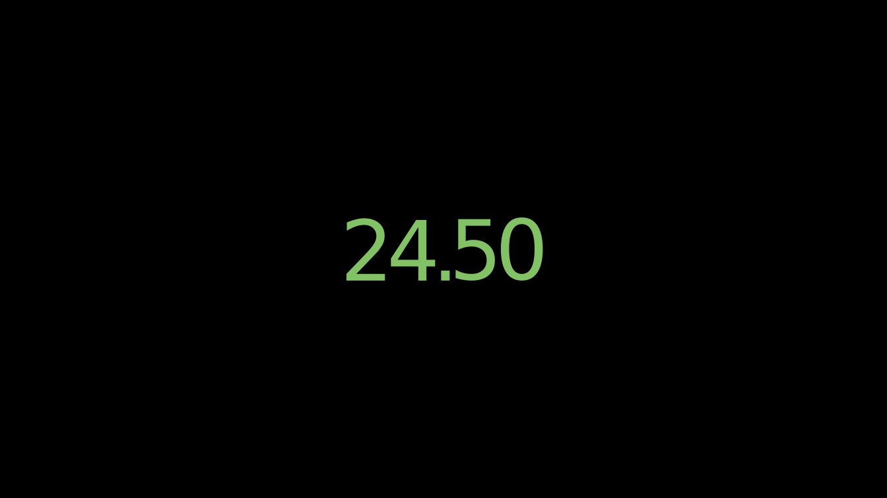
Variable() combines a label, an equals sign and a number
driven by a value tracker. Numbers that follow changing values, and
Variable(), are covered in Updaters
and value trackers; the counting animations
ChangeDecimalToValue() and ChangingDecimal()
in Animations.
Matrices
Matrix() lays out entries in a grid between brackets. It
accepts an R matrix, a data frame, or a list of rows. Entries go through
element_to_mobject (MathTex() by default, so
strings may contain LaTeX), and the brackets are LaTeX delimiters, so
matrices need LaTeX.
-
left_bracketandright_bracket:"["and"]"by default;"(","\\{"or"|"also work. -
v_buffandh_buff: the spacing of rows and columns. -
element_alignment_corner: which corner of each entry is aligned to the grid. -
DecimalMatrix(),IntegerMatrix()andMobjectMatrix()useDecimalNumber(),Integer()or arbitrary mobjects as entries.
plain <- Matrix(list(list(2, "\\pi"), list(-1, "\\sqrt{2}")))
decimal <- DecimalMatrix(rbind(c(3.14159, 2.71828), c(1.41421, 1.73205)),
element_to_mobject_config = list(num_decimal_places = 2))
integer <- IntegerMatrix(rbind(c(1, 2), c(3, 4)), left_bracket = "(", right_bracket = ")")
shapes <- MobjectMatrix(list(list(Circle(radius = 0.3), Square(side_length = 0.6)),
list(Triangle()$scale(0.35), Star(outer_radius = 0.35))))
plot(VGroup(plain, decimal, integer, shapes)$arrange(RIGHT, buff = 0.6)$scale_to_fit_width(13))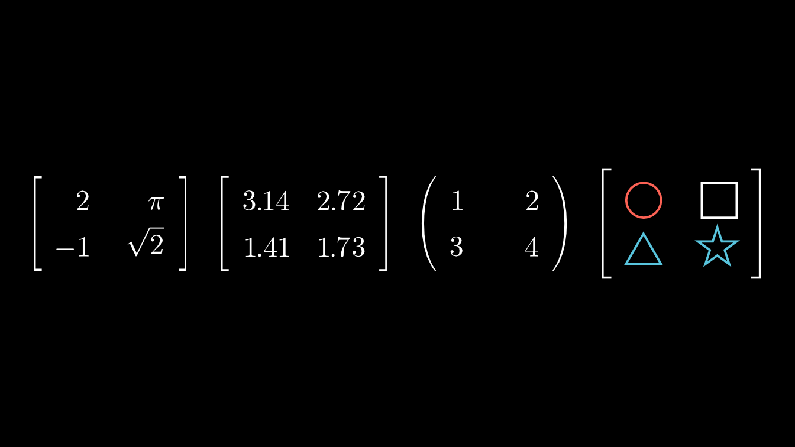
The accessors are get_rows(), get_columns()
and get_entries() (all groups, indexed from 1) and
get_brackets(); set_row_colors() and
set_column_colors() color whole rows or columns, and
add_background_to_entries() puts a dark rectangle behind
every entry.
m <- Matrix(rbind(c(1, 2, 3), c(4, 5, 6), c(7, 8, 9)))
m$set_column_colors(RED, GREEN, BLUE)
m$get_rows()[2]$set_color(YELLOW)
m$get_entries()[9]$set_color(WHITE)
box <- SurroundingRectangle(m$get_columns()[1])
plot(VGroup(m, box)$scale(1.8))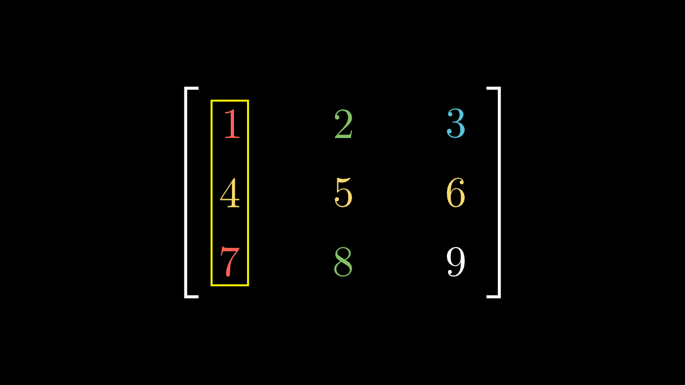
matrix_to_tex_string() writes an R matrix as a LaTeX
array, and matrix_to_mobject() typesets it in one piece
(without the separate entries of Matrix()).
get_det_text() builds the “det( ) = value” decoration
around a matrix; add the matrix itself separately.
matrix_to_tex_string(matrix(1:4, 2))
#> [1] "\\left[ \\begin{array}{cc}1 & 3 \\\\ 2 & 4\\end{array} \\right]"
a <- Matrix(rbind(c(2, 0), c(-1, 1)))
det <- get_det_text(a, determinant = 2, initial_scale_factor = 1)
plot(VGroup(VGroup(a, det)$shift(LEFT * 3), matrix_to_mobject(rbind(c(1, 0), c(0, 1)))$shift(RIGHT * 3))$scale(1.6))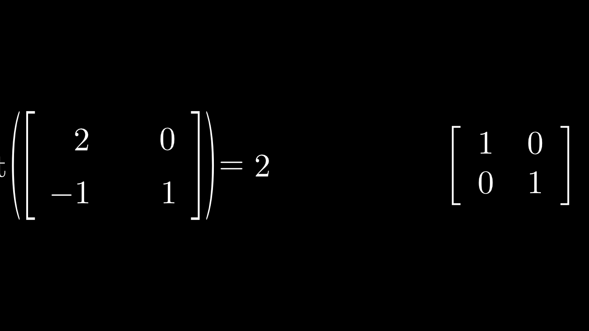
Matrices animate like any group. Here a column is highlighted and its entries move.
MatrixAnimation <- R6::R6Class("MatrixAnimation", inherit = Scene,
public = list(construct = function() {
m <- IntegerMatrix(rbind(c(1, 2), c(3, 4)), h_buff = 1.5)$scale(1.5)
self$play(Write(m))
column <- m$get_columns()[2]
box <- SurroundingRectangle(column, color = YELLOW)
self$play(Create(box))
self$play(column$animate$set_color(YELLOW))
self$play(Swap(m$get_entries()[2], m$get_entries()[4]))
self$wait(0.5)
})
)Tables
Table() arranges entries in a grid with lines between
the cells. It accepts an R matrix, a data frame or a list of rows; the
entries go through Paragraph(), so plain strings need no
LaTeX.
-
row_labels,col_labelsandtop_left_entry: lists of mobjects labeling the rows and columns, and the corner between them. -
include_outer_lines(off by default) andinclude_inner_lines. -
v_buffandh_buff: spacing;line_config: arguments for the lines, such asstroke_widthorcolor. -
element_to_mobjectandelement_to_mobject_config: how entries are built, andarrange_in_grid_configfor the layout.
Positions in a table are c(row, column), counted from 1
with labels included, so with row and column labels c(2, 2)
is the first entry. add_highlighted_cell(pos, color) puts a
colored background behind a cell; get_highlighted_cell()
returns that background without adding it, and get_cell()
the cell’s outline as a polygon.
df <- data.frame(model = c("linear", "quadratic"), rmse = c("2.31", "1.07"), r2 = c("0.81", "0.96"))
tab <- Table(df,
col_labels = list(Text("model"), Text("RMSE"), Text("R squared")),
include_outer_lines = TRUE,
line_config = list(stroke_width = 2, color = GREY_B)
)
tab$add_highlighted_cell(c(3, 2), color = GREEN)
tab$get_col_labels()$set_color(YELLOW)
outline <- tab$get_cell(c(3, 3), color = RED, stroke_width = 6)
glow <- tab$get_highlighted_cell(c(2, 1), color = PURPLE)
plot(VGroup(glow, tab, outline)$scale(1.1))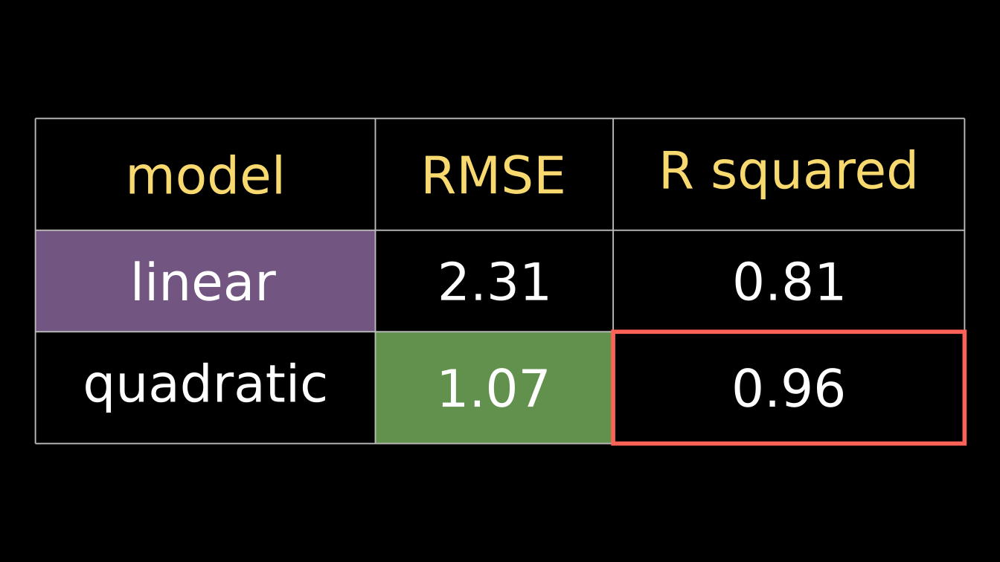
The accessors return groups indexed from 1: get_rows(),
get_columns(), get_entries() (all entries, or
the one at pos), get_entries_without_labels()
(the same, with positions that skip the labels),
get_row_labels(), get_col_labels(),
get_labels(), get_horizontal_lines() and
get_vertical_lines(). set_row_colors() and
set_column_colors() color whole rows or columns, and
add_background_to_entries() puts a rectangle behind each
entry.
grid <- Table(list(c("a", "b", "c"), c("d", "e", "f")),
row_labels = list(Text("row 1"), Text("row 2")))
length(grid$get_entries()$submobjects)
#> [1] 8
length(grid$get_entries_without_labels()$submobjects)
#> [1] 6
length(grid$get_horizontal_lines()$submobjects)
#> [1] 1
grid$set_column_colors(WHITE, BLUE, GREEN, ORANGE)
grid$get_entries_without_labels(c(2, 3))$set_color(RED)
plot(grid$scale(1.4))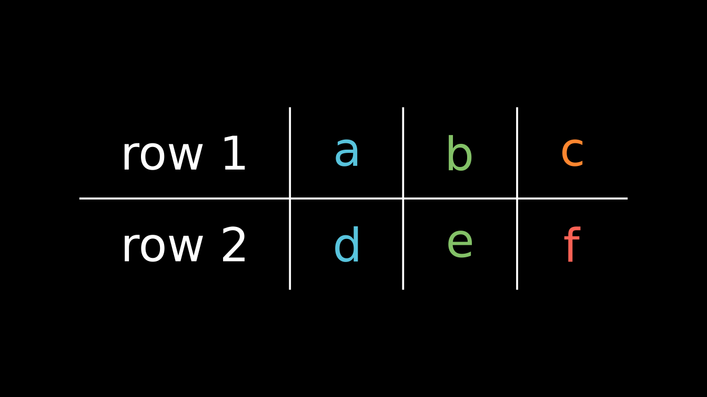
MobjectTable() takes mobjects as entries.
MathTable(), IntegerTable() and
DecimalTable() typeset entries with MathTex(),
Integer() and DecimalNumber(), so they need
LaTeX.
shapes <- MobjectTable(list(
list(Circle(radius = 0.4, color = BLUE), Square(side_length = 0.8, color = GREEN)),
list(Triangle(color = RED)$scale(0.45), Star(outer_radius = 0.45, color = YELLOW))
))
plot(shapes$scale(1.5))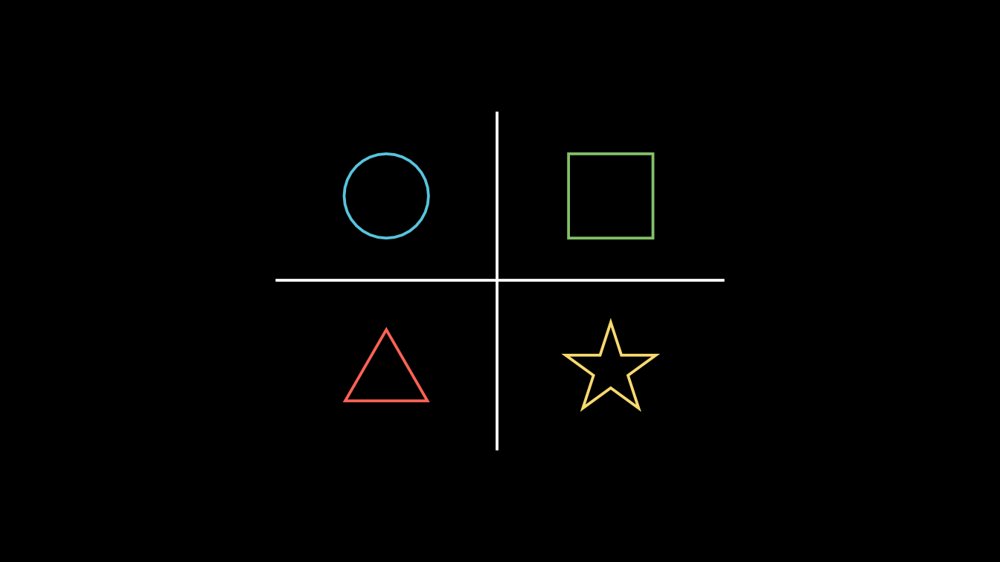
addition <- MathTable(list(list("+", 0, 1), list(0, 0, 1), list(1, 1, 2)), include_outer_lines = TRUE)
counts <- IntegerTable(rbind(c(12, 7), c(3, 25)), col_labels = list(Text("yes"), Text("no")),
row_labels = list(Text("A"), Text("B")))
rates <- DecimalTable(rbind(c(0.125, 0.5), c(0.875, 1)),
element_to_mobject_config = list(num_decimal_places = 3))
rates$set_row_colors(GREEN, ORANGE)
plot(VGroup(addition, counts, rates)$arrange(RIGHT, buff = 0.7)$scale_to_fit_width(13))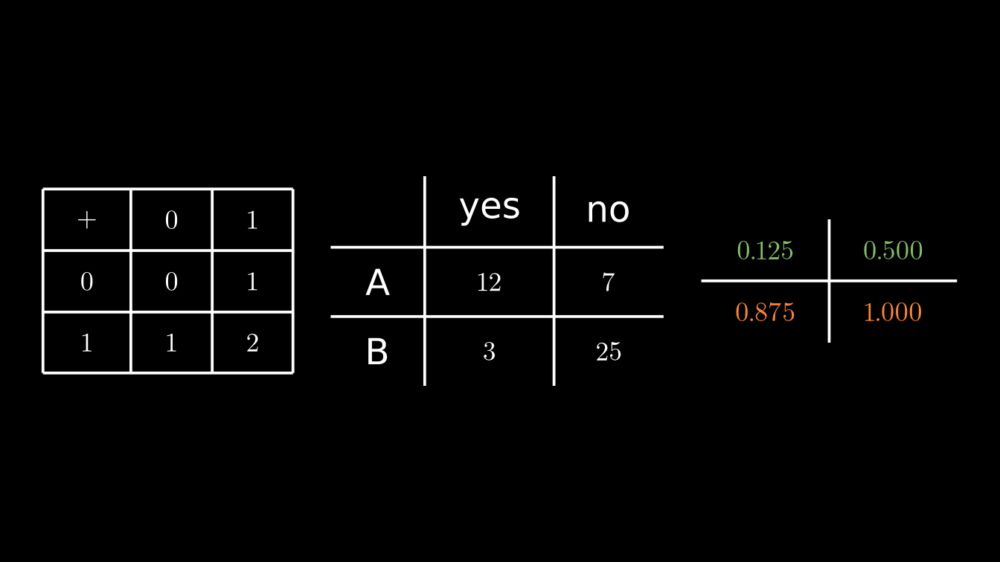
tab$create() returns an animation that draws the lines,
then the entries and labels, then the highlighted cells. Its arguments
choose the animations used for each part (line_animation,
element_animation, label_animation,
entry_animation) and their lag_ratio.
TableCreate <- R6::R6Class("TableCreate", inherit = Scene,
public = list(construct = function() {
tab <- Table(list(c("1", "2", "3"), c("4", "5", "6")),
col_labels = list(Text("x"), Text("y"), Text("z")),
include_outer_lines = TRUE)
tab$add_highlighted_cell(c(2, 2), color = TEAL)
self$play(tab$create(), run_time = 2)
self$play(Circumscribe(tab$get_rows()[3]))
self$wait(0.5)
})
)Equations in motion
Because a MathTex() has one submobject per part,
equations can be written, recolored and rearranged step by step.
Write() draws an equation, and
TransformMatchingTex() moves each part to the part with the
same LaTeX string in the next equation, fading the rest. The Animations vignette describes its
options.
SolveEquation <- R6::R6Class("SolveEquation", inherit = Scene,
public = list(construct = function() {
step1 <- MathTex("2", "x", "+", "3", "=", "11")$scale(2)
step2 <- MathTex("2", "x", "=", "11", "-", "3")$scale(2)
step3 <- MathTex("2", "x", "=", "8")$scale(2)
step4 <- MathTex("x", "=", "4")$scale(2)
self$play(Write(step1))
self$play(step1$animate$set_color_by_tex("x", YELLOW))
for (step in list(step2, step3, step4)) step$set_color_by_tex("x", YELLOW)
self$play(TransformMatchingTex(step1, step2, path_arc = PI / 2))
self$play(TransformMatchingTex(step2, step3))
self$play(TransformMatchingTex(step3, step4))
self$play(Circumscribe(step4))
self$wait(0.5)
})
)Parts can also be animated on their own, for example to highlight a term before rewriting it:
HighlightTerms <- R6::R6Class("HighlightTerms", inherit = Scene,
public = list(construct = function() {
eq <- MathTex("(a + b)^2", "=", "a^2", "+", "2ab", "+", "b^2", font_size = 80)
self$add(eq)
self$play(Indicate(eq[5]))
self$play(eq[3]$animate$set_color(BLUE), eq[7]$animate$set_color(GREEN))
brace <- Brace(eq[5], DOWN)
note <- Text("the cross term", font_size = 32)$next_to(brace, DOWN)
self$play(GrowFromCenter(brace), FadeIn(note, shift = UP))
self$wait(0.5)
})
)